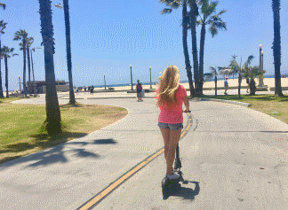
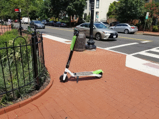
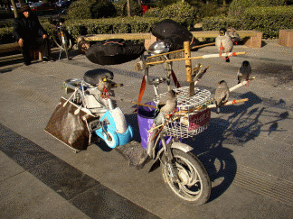

About
They were dumped onto the streets Los Angeles without any further notice, and now they're absolutely everywhere. This is not
an invasion from another country or another planet. No, this is an Invasion of the Scooters.
LA has always had awful traffic and pollution issues. Hell, the highway is so crammed during rush hour that if you got out of
your car, walked two miles to the local cafe for some food and walked back, the traffic still wouldn't have moved an inch.
Then in September 2017, a new startup called "Bird" released what they thought would be the solution to LA's increasing traffic
and pollution problem; release a shit ton of electric scooters that you pay per mile to ride onto the streets. There have already
been public pay-per-mile bikes for quite some time. However, the key difference between the bicycles and the bird scooters is that
the scooters are "dockless," meaining that instead of returning them to a designated dock when you're done riding you just leave
them lying wherever you feel like. They're all over the sidewalks, the streets, the beach, and pretty much any other place in LA
that has some room to ride in.

This is now an extremely common sight all over LA county.
They're a major safety hazard.
According to both the Bird Scooter App, each rider must be over 18, have a valid driver's license, and wear a helmet. Want to
know how many Bird riders that I've seen wearing helmets? Maybe one or two. Not only that, but i've seen numerous kids that don't
like they're 18 or that they even have a drivers license going zipping down the sidewalk at 15 miles per hour. Just while walking
i've almost been hit by a fucking speeding scooter at least eight, maybe nine times. No helmet + underage + riding alongside
pedestrians/cars = disaster. And yet, the Bird company doesn't seem to give too much of a shit. It'll take a horrific, gruesome
accident involving a bunch of brutally destroyed Bird riders/pedestrians/motorists for something to be done.

I swear, somebody's bound to get fatally injured on or by one of those scooters
The scooter virus won't stop spreading anywhere and everywhere
Over the course of it's existence, the Bird company has released it's virus onto 41 unsuspecting cities in three different countries.
Meanwhile, it's competitor Lime has unleashed even more of the scooter infection onto 81 cities in four countries. Before the scooter
pandemic, I was used to see tons and tons of trash littering the streets. These days, I still see litter all over the place, except now
a good portion of it is in the form of dirty-ass public scooters.

Both Bird and Lime are to blame for the scooter outbreak.
If you abandon your car in the middle of the street, it'll get towed away and you'll likely be fined or arrested. If you leave a Bird
scooter in the middle of the street, some hipster will hop on within minutes and zip off to "Le Olde' Bearded Oil Shoppe." Birds and Limes
need to be banned until they can sort their shit out and/or have clear regulations to abide by.

I hope that when I have kids, this will be the only kind of "Bird scooter" that they'll ever see.
| - |
The Domain of Ivan, 2018